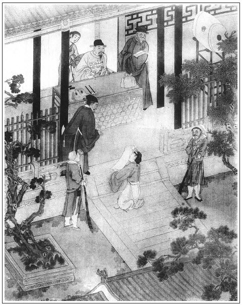

張回敬濟已為雪娥唆打，固雲芰荷憔悴矣，乃猶可支持殘莖，至此則又入嚴州。夫嚴州者，嚴霜也。今此一人，雪上加霜，不全根披剝，將安在哉？幸有徐崶救命。夫崶者，風也。徐風者，言雖有雪上之霜，幸而風威不急，猶可踉蹌支吾於徐風之下。有一日張勝巡風，則風利如刀，刀利如風。方是入骨之朔風，吾不知敗荷葉之殘莖爛葉，蓋吹向何方去也。
賣去玉簪，買一滿堂。夫滿堂者，紅也。此與杏花自是一色，當相安無疑矣。
鐵指甲楊二郎，枯柳枝也，糶風賣雨，夫柳枝，當嚴冬之時，其穿破爛之芰莖，何難之有？一旦因風吹雨則潦倒，敗荷葉何能當哉？
李遇嚴霜，亦當少挫，故李通判父子至嚴州均受辱。但必寫至衙內寧死不離玉樓，則所以報玉樓者至矣。誰謂守志待時者之不得美報也哉？
詩曰：
猛虎馮其威，往往遭急縛。
雷吼徒咆哮，枝撐已在腳。
忽看皮寢處，無復睛閃爍。
人有甚於斯，足以勸元惡。

話說李衙內打了玉簪兒一頓，即時叫陶媽媽來領出，賣了八兩銀子，另買了個十八歲使女，名喚滿堂兒上灶，張夾蓋云「滿堂僧不厭，一個欲人多」是也。不在話下。
卻表陳敬濟，自從西門大姐來家，交還了許多床帳妝奩，箱籠傢伙，張夾此處一為鋪張許多東西，見月娘實貪敬濟許多東西，至此方吐也。又為瓶兒一痛。三日一場嚷，五日一場鬧，問他娘張氏要本錢做買賣。他母舅張團練，來問他母親借了五十兩銀子，復謀管事。被他吃醉了，往張舅門上罵嚷。繡旁真畜生。他張舅受氣不過，另問別處借了銀子，幹成管事，還把銀子交還交來。張夾故雲荷盡，已無擎雨蓋。然則團練奈何不去？他母親張氏，著了一場重氣，染病在身，日逐臥床不起，終日服藥，請醫調治。吃他逆毆不過，只得兌出三百兩銀子與他，叫陳定在家門首，打開兩間房子開布鋪，做買賣。敬濟便逐日結交朋友陸三郎、楊大郎狐朋狗黨，張夾比十兄弟何如？在鋪中彈琵琶，抹骨牌，打雙陸，吃半夜酒，看看把本錢弄下去了。陳定對張氏說他每日飲酒花費。張氏聽信陳定言語，便不肯托他。敬濟反說陳定染布去，克落了錢，把陳定兩口兒攆出來外邊居住，卻搭了楊大郎做夥計。這楊大郎名喚楊光彥，綽號為鐵指甲，專一糶風賣雨，繡旁好生意。架謊鑿空。他許人話，如捉影捕風，騙人財，似探囊取物。張夾比伯爵更甚。這敬濟問娘又要出二百兩銀子來添上，共湊了五百兩銀子，信著他往臨清販布去。
這楊大郎到家收拾行李，跟著敬濟從家中起身，前往臨清馬頭上尋缺貨去。張夾一路總寫敬濟呆處，較西門遠甚，方可嚴州作地。到了臨清，這臨清閘上是個熱鬧繁華大馬頭去處，商賈往來之所，車輛輻湊之地，有三十二條花柳巷，七十二座管弦樓。這敬濟終是年小後生，被這楊大郎領著游娼樓，登酒店，貨物到販得不多。因走在一娼樓，見了一個粉頭，名喚馮金寶，張夾好缺貨。生的風流俏麗，色藝雙全。問青春多少，鴇子說：「姐兒是老身親生之女，止是他一人掙錢養活。今年青春才交二九一十八歲。」敬濟一見，心目蕩然，與了鴇子五兩銀子房金，一連和他歇了幾夜。楊大郎見他愛這粉頭，留連不捨，在旁花言說念，就要娶他家去。鴇子開口要銀一百二十兩，講到一百兩上，兌了銀子，娶了來家。一路上用轎抬著，楊大郎和敬濟都騎馬，押著貨物車走，一路揚鞭走馬，那樣歡喜。正是：
多情燕子樓，馬道空回首。
載得武陵春，陪作鸞凰友。
張氏見敬濟貨到販得不多，把本錢到娶了一個唱的來家，又著了口重氣，嗚呼哀哉，斷氣身亡。繡旁即此死有餘辜。張夾比金蓮罵潘姥姥何如？所以此書必以孝化也。這敬濟不免買棺裝殮，唸經做七，停放了一七光景，發送出門，祖塋合葬。他母舅張團練看他娘面上，亦不和他一般見識。繡旁畢竟前輩厚道。張夾省筆，亦是補筆。這敬濟墳上覆墓回來，把他娘正房三間，中間供養靈位，那兩間收拾與馮金寶住，大姐到住著耳房。又替馮金寶買了丫頭重喜兒伏侍。門前楊大郎開著鋪子，家裡大酒大肉買與唱的吃。每日只和唱的睡，把大姐丟著不去揪采。
一日，打聽孟玉樓嫁了李知縣兒子李衙內，帶過許多東西去。張夾又為罵張四舅時一哭。三年任滿，李知縣升在浙江嚴州府做了通判，領憑起身，打水路赴任去了。這陳敬濟因想起昔日在花園中拾了孟玉樓那根簪子，就要把這根簪子做個證兒，趕上嚴州去。張夾一簪之針線，其妙如此。只說玉樓先與他有了奸，與了他這根簪子，不合又帶了許多東西，嫁了李衙內，都是昔日楊戩寄放金銀箱籠，應沒官之物。繡眉嘗謂：自作孽，不可活。敬濟此等處，皆自作孽也。「那李通判一個文官，多大湯水！聽見這個利害口聲，不怕不叫他兒子雙手把老婆奉與我。我那時娶將來家，與馮金寶做一對兒，落得好受用。」張夾不必定要六房，還是知足。
正是：
計就月中擒月兔，謀成日裡捉金烏。
敬濟不來到好，此一來，正是：
失曉人家逢五道，溟泠餓鬼撞鐘馗。張夾二語有人用之久矣，連上計就二句用之，真成一哭。
有詩為證：
趕到嚴州訪玉人，人心難忖似石沉。
侯門一旦深似海，從此蕭郎落陷坑。
一日，陳敬濟打點他娘箱中，尋出一千兩金銀，留下一百兩與馮金寶家中盤纏，把陳定復叫進來看家，並門前鋪子發賣零碎布疋。他與楊大郎又帶了家人陳安，押著九百兩銀子，從八月中秋起身，前往湖州販了半船絲綿綢絹，來到清江浦馬頭上，灣泊住了船隻，投在個店主人陳二店內。交陳二殺雞取酒，與楊大郎共飲。飲酒中間，和楊大郎說：「夥計，你暫且看守船上貨物，繡旁虧他放心。張夾亦是熱結文中餘意。蓋西門結而不以為真；敬濟不結而不以為假，西門之受騙故較敬濟少可。在二郎店內略住數日。等我和陳安拿些人事禮物，往浙江嚴州府，看看家姐嫁在府中。多不上五日，少只三日就來。」楊大郎道：「哥去只顧去。兄弟情願店中等候。哥到日，一同起身。」這陳敬濟千不合萬不合和陳安張夾和陳安更妙。身邊帶了些銀兩、人事禮物，有日取路徑到嚴州府。繡眉馮金寶百金耳。盡船中所有可得九馮金寶，乃棄而求一無蹤影之玉樓，大失算矣。張夾「有日」二字內大郎已去遠矣。
進入城內，投在寺中安下。打聽李通判到任一個月，家小船隻才到三日。這陳敬濟不敢怠慢，買了四盤禮物，四疋紵絲尺頭，陳安押著。他便揀選衣帽齊整，眉目光鮮，逕到府衙前，與門吏作揖道：「煩報一聲，說我是通判老爹衙內新娶娘子的親，孟二舅來探望。」張夾方知前請二舅用敬濟陪坐之妙。這門吏聽了，不敢怠慢，隨即稟報進去。衙內正在書房中看書，聽見是婦人兄弟，令左右先把禮物抬進來，一面忙整衣冠，道：「有請。」把陳敬濟請入府衙廳上敘禮，分賓主坐下，說道：「前日做親之時，怎的不會二舅？」敬濟道：「在下因在川廣販貨，一年方回。不知家姐嫁與府上，有失親近。今日敬備薄禮，來看看家姐。」李衙內道：「一向不知，失禮，恕罪，恕罪。」須臾，茶湯已罷，衙內令左右：「把禮帖並禮物取進去，對你娘說，二舅來了。」孟玉樓正在房中坐的，只聽小門子進來，報說：「孟二舅來了。」玉樓道：「再有那個孟舅，莫不是我二哥孟銳來家了，千山萬水來看我？」只見伴當拿進禮物和帖兒來，上面寫著：「眷生孟銳」，就知是他兄弟，一面道：「有請。」令蘭香收拾後堂乾淨。
玉樓裝點打扮，俟候出見。只見衙內讓進來，玉樓在簾內觀看，可霎作怪，不是他兄弟，卻是陳姐夫。「他來做甚麼？等我出去，見他怎的說話？常言，親不親，故鄉人；美不美，鄉中水。雖然不是我兄弟，也是我女婿人家。」一面整妝出來拜見。那敬濟說道：「一向不知姐姐嫁在這裡，沒曾看得……」才說得這句，不想門子來請衙內，外邊有客來了。這衙內分付玉樓款待二舅，就出去待客去了。玉樓見敬濟磕下頭去，連忙還禮，說道：「姐夫免禮，那陣風兒刮你到此？」敘畢禮數，上坐，叫蘭香看茶出來。吃了茶，彼此敘了些家常話兒，玉樓因問：「大姐好麼？」
敬濟就把從前西門慶家中出來，並討箱籠的一節話告訴玉樓。張夾借詐月娘之情，以挾玉樓，所以下文不敢當面聲言也。玉樓又把清明節上墳，在永福寺遇見春梅，在金蓮墳上燒紙的話告訴他。又說：「我那時在家中，也常勸你大娘，疼女兒就疼女婿，親姐夫，不曾養活了外人。他聽信小人言語，把姐夫打發出來。落後姐夫討箱子，我就不知道。」敬濟道：「不瞞你老人家說，我與六姐相交，誰人不知？繡眉借金蓮為挑撥之端，亦妙。張夾借金蓮以動玉樓，文字逼清，一絲不亂。生生吃他聽奴才言語，把他打發出去，才吃武松殺了。他若在家，那武松有七個頭八個膽，敢往你家來殺他？我這仇恨，結的有海來深。六姐死在陰司裡，也不饒他。」玉樓道：「姐夫也罷，丟開手的事，自古冤仇只可解，不可結。」
說話中間，丫鬟放下桌兒，擺下酒來，杯盤餚品，堆滿春台。玉樓斟上一杯酒，雙手遞與敬濟說：「姐夫遠路風塵，無可破費，且請一杯兒水酒。」這敬濟用手接了，唱了喏，也斟一杯回奉婦人，敘禮坐下，因見婦人「姐夫長，姐夫短」叫他，口中不言，心內暗道：「這淫婦怎的不認犯，只叫我姐夫？等我慢慢的探他。」張夾呆乃至此。當下酒過三巡，餚添五道，彼此言來語去，說的入港。這敬濟酒蓋著臉兒，常言「酒情深似海，色膽大如天」，見無人在跟前，先丟幾句邪言說入去，道：「我兄弟思想姐姐，如渴思漿，如熱思涼，想當初在丈人家，怎的在一處下棋抹牌，同坐雙雙，似背蓋一般。誰承望今日各自分散，你東我西。」繡眉未同而言，殊無赧色，真良心喪盡矣。玉樓笑道：「姐夫好說。自古清者清而渾者渾，久而自見。」張夾玉樓之言不惡而嚴，較月娘粗鄙遠甚。這敬濟笑嘻嘻向袖中取出一包雙人兒的香茶，遞與婦人，說：「姐姐，你若有情，可憐見兄弟，吃我這個香茶兒。」說著，就連忙跪下。那婦人登時一點紅從耳畔起，把臉飛紅了，一手把香茶包兒掠在地下，說道：「好不識人敬重！奴好意遞酒與你吃，到戲弄我起來。」就撇了酒席往房裡去了。
敬濟見他不理，一面拾起香茶來，就發話道：「我好意來看你，你到變了卦兒。你敢說你嫁了通判兒子好漢子，不採我了。你當初在西門慶家做第三個小老婆，沒曾和我兩個有首尾？」因向袖中取出舊時那根金頭銀簪子，拿在手內說：「這個是誰人的？你既不和我有奸，這根簪兒怎落在我手裡？上面還刻著玉樓名字。你和大老婆串同了，把我家寄放的八箱子金銀細軟、玉帶寶石東西，都是當朝楊戩寄放應沒官之物，都帶來嫁了漢子。我教你不要慌，到八字八し兒上和你答話！」玉樓見他發話，拿的簪子委是他頭上戴的金頭蓮瓣簪兒：「昔日在花園中不見，怎的落在這短命手裡？」恐怕嚷的家下人知道，須臾變作笑吟吟臉兒，張夾惟此一變，直如夜叉現形，鍾馗出像，千古婦人，同此一付臉皮，一付技倆也。走將出來，一把手拉敬濟，說道：「好姐夫，奴鬥你耍子，如何就惱起來。」因觀看左右無人，悄悄說：「你既有心，奴亦有意。」繡眉玉樓轉關亦快，然而忽惱忽喜，其偽易知，只好哄敬濟小孩子。兩個不由分說，摟著就親嘴。這陳敬濟把舌頭似蛇吐信子一般，就舒到他口裡交他咂，說道：「你叫我聲親親的丈夫，才算你有我之心。」張夾呆乃至此，寫得活現。婦人道：「且禁聲，只怕有人聽見。」敬濟悄悄向他說：「我如今治了半船貨，在清江浦等候。你若肯下顧時，如此這般，到晚夕假扮門子，私走出來，跟我上船家去，成其夫婦，有何不可？他一個文職官，怕是非，莫不敢來抓尋你不成？」繡眉敬濟可謂小兒強作解事。婦人道：「既然如此，也罷。」約會下：「你今晚在府牆後等著，奴有一包金銀細軟，打牆上系過去，與你接了，然後奴才扮做門子，打門裡出來，跟你上船去罷。」看官聽說，正是佳人有意，那怕粉牆高萬丈；紅粉無情，總然共坐隔千山。當時孟玉樓若嫁得個癡蠢之人，不如敬濟，敬濟便下得這個鍬橛著；如今嫁這李衙內，有前程，又且人物風流，青春年少，張夾敬濟固自以為潘安子建矣，後生大都如此。恩情美滿，他又勾你做甚？休說平日又無連手。繡旁道盡。繡眉觀此，則一輩強賣俏勾挑者，不為厭物，則為笑具，明矣。這個郎君也是合當倒運，就吐實話，洩機與他，倒吃婆娘哄賺了。正是：
花枝葉下猶藏刺，人心難保不懷毒。
當下二人會下話，這敬濟吃了幾杯酒，告辭回去。李衙內連忙送出府門，陳安跟隨而去。衙內便問婦人：「你兄弟住那裡下處？我明日回拜他去，送些嗄程與他。」婦人便說：「那裡是我兄弟，他是西門慶家女婿，如此這般，來勾搭要拐我出去。奴已約下他，今晚三更在後牆相等。咱不如將計就計，把他當賊拿下，除其後患如何？」繡旁玉樓亦惡。張夾必拿敬濟，蓋為寄放諸物之言有以中之也，觀其言「後患」二字可知。衙內道：「叵耐這廝無端，自古無毒不丈夫，不是我去尋他，他自來送死。」一面走出外邊，叫過左右伴當，心腹快手，如此這般預備去了。
這陳敬濟不知機變，至半夜三更，果然帶領家人陳安，來府衙後牆下，以咳嗽為號，只聽牆內玉樓聲音，打牆上掠過一條索子去，那邊系過一大包銀子。原來是庫內拿的二百兩贓罰銀子。張夾衙門庫中取銀，通判不知，通判亦惡得無罪？這敬濟才待教陳安拿著走，忽聽一陣梆子響，黑影裡閃出四五條漢，叫聲：「有賊了！」登時把敬濟連陳安都綁了，稟知李通判，分付：「都且押送牢裡去，明日問理。」
原來嚴州府正堂知府姓徐，名喚徐崶，張夾雖是朔風，猶是冬天晴和之風，故殘芰得少留也。系陝西臨洮府人氏，庚戌進士，極是個清廉剛正之人。張夾寫風如畫。次早升堂，左右排兩行官吏，這李通判上去，畫了公座，庫子呈稟賊情事，帶陳敬濟上去，說：「昨夜至一更時分，有先不知名今知名賊人二名：陳敬濟、陳安，鍬開庫門鎖鑰，偷出贓銀二百兩，越牆而過，致被捉獲，來見老爺。」徐知府喝令：「帶上來！」把陳敬濟並陳安揪采驅擁至當廳跪下。知府見敬濟年少清俊，繡旁明眼。張夾畫出一不知事之狂且。便問：「這廝是那裡人氏？因何來我這府衙公廨，夜晚做賊，偷盜官庫贓銀，有何理說？」那陳敬濟只顧磕頭聲冤。徐知府道：「你做賊如何聲冤？」李通判在旁欠身便道：「老先生不必問他，眼見得贓證明白，何不加起刑來。」徐知府即令左右：「拿下去打二十板。」李通判道：「人是苦蟲，不打不成。不然，這賊便要展轉。」當下兩邊皂隸，把敬濟、陳安拖番，大板打將下來。這陳敬濟口內只罵：「誰知淫婦孟三兒陷我至此，冤哉！苦哉！」繡眉楊戩寄贓等語，本不當言，卻妄言而賈禍；禍已臨身，正宜直言以祈免，卻又不敢言，此所謂少年妄誕之言也。張夾卿自陷耳，玉姐與爾何仇？這徐知府終是黃堂出身官人，聽見這一聲，必有緣故，繡旁聰耳。才打到十板上，喝令：「住了，且收下監去，明日再問。」李通判道：「老先生不該發落他，常言『人心似鐵，官法如爐』，從容他一夜不打緊，就翻異口詞。」徐知府道：「無妨，吾自有主意。」當下獄卒把敬濟、陳安押送監中去訖。
這徐知府心中有些疑忌，即喚左右心腹近前，如此這般，下監中探聽敬濟所犯來歷，繡旁細心。即便回報。這幹事人假扮作犯人，和敬濟晚間在一㭱上睡，問其所以：「我看哥哥青春年少，不是做賊的，今日落在此，打屈官司。」敬濟便說：「一言難盡，小人本是清河縣西門慶女婿，這李通判兒子新娶的婦人孟氏，是俺丈人的小，舊與我有奸的。今帶過我家老爺楊戩寄放十箱金銀寶玩之物來他家，我來此間問他索討，反被他如此這般欺負，張夾何不堂上說出？活畫一狂且身份。把我當賊拿了。苦打成招，不得見其天日，是好苦也！」這人聽了，走來退廳告報徐知府。知府道：「如何？我說這人聲冤叫孟氏，必有緣故。」繡眉聽訟人耳要聰，目要明，心要細，不可只在形跡上求之。徐知府可謂善聽訟矣。
到次日昇堂，官吏兩旁侍立。張夾明為李通判一襯，方為打衙內身份。這徐知府把陳敬濟、陳安提上來，摘了口詞，取了張無事的供狀，喝令釋放。李通判在旁不知，還再三說：「老先生，這廝賊情既的，不可放他。」反被徐知府對佐貳官盡力數說了李通判一頓，說：「我居本府正官，與朝廷幹事，不該與你家官報私仇，誣陷平人作賊。你家兒子娶了他丈人西門慶妾孟氏，帶了許多東西，應沒官贓物，金銀箱籠來。他是西門慶女婿，逕來索討前物，你如何假捏賊情，拿他入罪，教我替你家出力？做官養兒養女，也要長大，若是如此，公道何堪？」繡眉李通判此時真難為情。張夾必得如此，方激得李公一怒。當廳把李通判數說的滿面羞慚，垂首喪氣而不敢言。陳敬濟與陳安便釋放出去了。良久，徐知府退堂。
這李通判回到本宅，心中十分焦燥。便對夫人大嚷大叫道：「養的好不肖子，今日吃徐知府當堂對眾同僚官吏，盡力數落了我一頓，可不氣殺我也！」夫人慌了，便道：「甚麼事？」李通判即把兒子叫到跟前，喝令左右：「拿大板子來，氣殺我也！」說道：「你拿得好賊，他是西門慶女婿。因這婦人帶了許多妝奩、金銀箱籠來，他口口聲聲稱是當朝逆犯楊戩寄放應沒官之物，來問你要。說你假盜出庫中官銀，當賊情拿他。我通一字不知，反被正堂徐知府對眾數說了我這一頓。此是我頭一日官未做，你照顧我的。我要你這不肖子何用？」即令左右雨點般大板子打將下來。可憐打得這李衙內皮開肉綻，鮮血迸流。夫人見打得不像模樣，在旁哭泣勸解。
孟玉樓立在後廳角門首，掩淚潛聽。當下打了三十大板，李通判分付左右：「押著衙內，即時與我把婦人打發出門，令他任意改嫁，免惹是非，全我名節。」那李衙內心中怎生捨得離異，只顧在父母跟前啼哭哀告：「寧把兒子打死爹爹跟前，並捨不的婦人。」張夾寫玉樓得所托矣。李通判把衙內用鐵索墩鎖在後堂，不放出去，只要囚禁死他。夫人哭道：「相公，你做官一場，年紀五十餘歲，也只落得這點骨血。不爭為這婦人，你囚死他，往後你年老休官，倚靠何人？」繡旁四字更醒。繡眉數語使人一片做官念頭灰冷。張夾回照西門，又回照磨鏡一回。李通判道：「不然，他在這裡，須帶累我受人氣。」夫人道：「你不容他在此，打發他兩口兒回原籍真定府家去便了。」繡旁處分甚妥。通判依聽夫人之言，放了衙內，限三日就起身，打點車輛，同婦人歸棗強縣裡攻書去了。張夾至此方結玉樓。夫玉樓直結入真定棗強之李家，是真以天理之淡，定為百年之重任者矣。是即所為仁也，所為孝也，作者自命以此。
卻表陳敬濟與陳安出離嚴州府，到寺中取了行李，逕往清江浦陳二店中來尋楊大郎。陳二說：「他三日前，說你有信來說不得來，他收拾了貨船，起身往家中去了。」繡眉何所聞而來，何所見而去？可為年少妄言之戒這敬濟未信，還向河下去尋船隻，撲了個空。說道：「這天殺的，如何不等我來就起身去了！」繡眉敬濟非不伶俐乖巧，到此時猶說此呆語，似乎人情世故一毫不知，可見此段伶俐乖巧，正是呆處。況新打監中出來，身邊盤纏已無，和陳安不免搭在人船上，把衣衫解當，討吃歸家，忙忙似喪家之犬，急急如漏網之魚，隨行找尋楊大郎，並無蹤跡。那時正值秋暮天氣，樹木凋零，金風搖落，甚是淒涼。有詩八句，單道這秋天行人最苦：
棲棲芰荷枯，葉葉梧桐墜。張夾說出敬濟之名。
蛩鳴腐草中，雁落平沙地。
細雨濕青林，霜重寒天氣。張旁所謂嚴州。
不見路行人，怎曉秋滋味。
有日敬濟到家。陳定正在門首，看見敬濟來家，衣衫襤褸，面貌黧黑，諕了一跳。接到家中，問貨船到於何處。敬濟氣得半日不言，把嚴州府遭官司一節說了：「多虧正堂徐知府放了我，不然性命難保。繡眉人有受錢代杖，而以錢轉付杖者，得以杖輕為恩，正與敬濟感徐知府同一可笑。張夾與西門虧金蓮時一樣。今被楊大郎這天殺的，把我貨物不知拐的往那裡去了。」先使陳定往他家探聽，他家說還不曾來家。敬濟又親去問了一遭，並沒下落，心中著慌，走入房中。那馮金寶又和西門大姐首南面北，自從敬濟出門，兩個合氣，直到如今。大姐便說：「馮金寶拿著銀子錢，轉與他鴇子去了。他家保兒成日來，瞞藏背掖，打酒買肉，在屋裡吃。家中要的沒有，睡到晌午，諸事兒不買，只熬俺們。」張夾曾幾何時，西門之女已凍餒矣。馮金寶又說：「大姐成日橫草不拈，豎草不動，偷米換燒餅吃。又把煮的醃肉偷在房裡，和丫頭元宵兒同吃。」這陳敬濟就信了，繡旁編得可笑。反罵大姐：「賊不是才料淫婦，你害饞癆饞痞了，張夾是雌飯吃之言回報。偷米出去換燒餅吃，又和丫頭打伙兒偷肉吃。」
把元宵兒打了一頓，把大姐踢了幾腳。這大姐急了，趕著馮金寶兒撞頭，罵道：「好養漢的淫婦！你偷盜的東西與鴇子不值了，到學舌與漢子，說我偷米偷肉，犯夜的倒拿住巡更的了，張夾又是金蓮、月娘。教漢子踢我。我和你這淫婦兌換了罷，要這命做甚麼！」這敬濟道：「好淫婦，你換兌他，你還不值他幾個腳指頭兒哩。」也是合當有事，於是一把手採過大姐頭發來，用拳撞腳踢、拐子打，打得大姐鼻口流血，半日甦醒過來。這敬濟便歸唱的房裡睡去了。由著大姐在下邊房裡嗚嗚咽咽，只顧哭泣。繡眉大姐此時何不罵敬濟雌飯吃？敬濟禽獸畜生不必言，大姐死亦有因。元宵兒便在外間睡著了。可憐大姐到半夜，用一條索子懸樑自縊身死，亡年二十四歲。
到次日早辰，元宵起來，推裡間不開。上房敬濟和馮金寶還在被窩裡，使他丫頭重喜兒來叫大姐，要取木盆洗坐腳，只顧推不開。敬濟還罵：「賊淫婦，如何還睡？這咱晚不起來！我這一跺開門進去，把淫婦鬢毛都拔淨了。」張夾取死之道如此。重喜兒打窗眼內望裡張看，說道：「他起來了，且在房裡打鞦韆耍子兒哩。」又說：「他提偶戲耍子兒哩。」只見元宵瞧了半日，叫道：「爹，不好了，俺娘吊在床頂上吊死了。」這小郎才慌了，和唱的齊起來，跺開房門，向前解卸下來，灌救了半日，那得口氣兒來。不知多咱時分，嗚呼哀哉死了。正是：
不知真性歸何處，疑在行雲秋水中。
陳定聽見大姐死了，恐怕連累，先走去報知月娘。繡旁好活便管家。張夾人情如此。月娘聽見大姐吊死了，敬濟娶唱的在家，正是冰厚三尺，不是一日之寒，率領家人小廝、丫鬟媳婦七八口，往他家來。見了大姐屍首吊的直挺挺的，哭喊起來，將敬濟拿住，揪采亂打，渾身錐子眼兒也不計數。繡眉何不再脫褲子，露出頭來？張夾總是市井惡套，寫來逼真。唱的馮金寶躲在床底下，採出來，也打了個臭死。把門窗戶壁都打得七零八落，房中床帳妝奩都還搬的去了。張眉月娘到底不放空，直是餓蠅嗜血。歸家請將吳大舅、二舅來商議。張夾凡是必大舅、二舅商議，一寫人情，二寫月娘通日俱是吳氏當家也。大舅說：「姐姐，你趁此時咱家人死了不到官，到明日他過不得日子，還來纏要箱籠。人無遠慮，必有近憂。不如到官處斷開了，庶杜絕後患。」繡旁老成之見。月娘道：「哥見得是。」一面寫了狀子。
次日，月娘親自出官，來到本縣授官廳下，遞上狀去。原來新任知縣姓霍，名大立，湖廣黃岡縣人氏，舉人出身，為人鯁直。聽見系人命重事，即升廳受狀。見狀上寫著：
告狀人吳氏，年三十四歲，系已故千戶西門慶妻。狀告為惡婿欺凌孤孀，聽信娼婦，熬打逼死女命，乞憐究治，以存殘喘事。比有女婿陳敬濟，遭官事投來氏家，潛住數年。平日吃酒行兇，不守本分，打出吊入。氏懼法逐離出門。豈期敬濟懷恨，在家將氏女西門氏，時常熬打，一向含忍。不料伊又娶臨清娼婦馮金寶來家，奪氏女正房居住，聽信唆調，將女百般痛辱熬打，又采去頭髮，渾身踢傷，受忍不過，比及將死，於本年八月廿三日三更時分，方才將女上吊縊死。切思敬濟，恃逞兇頑，欺氏孤寡，聲言還要持刀殺害等語，情理難容。繡旁後責令杜絕，在此看出。乞賜行拘到案，嚴究女死根由，盡法如律。庶凶頑知警，良善得以安生，而死者不為含冤矣。為此具狀上告本縣青天老爺施行。
這霍知縣在公座上看了狀子，又見吳月娘身穿縞素，腰繫孝裙，系五品職官之妻，生的容貌端莊，儀容閑雅。張夾將月娘一描，總是醜絕西門，又為當日提刑所一照也。欠身起來，說道：「那吳氏起來，據我看，你也是個命官娘子，這狀上情理，我都知了。你請回去，今後只令一家人在此伺候就是了。我就出牌去拿他。」那吳月娘連忙拜謝了知縣，出來坐轎子回家，委付來昭廳下伺候。須臾批了呈狀，委兩個公人，一面白牌，行拘敬濟、娼婦馮金寶，並兩鄰保甲，正身赴官聽審。
這敬濟正在家裡亂喪事，聽見月娘告下狀來，縣中差公人發牌來拿他，諕的魂飛天外，魄喪九霄。那馮金寶已被打得渾身疼痛，睡在床上。聽見人拿他，諕的魂也不知有無。陳敬濟沒高低使錢，張夾是不知事狂且身份。打發公人吃了酒飯，一條繩子連唱的都拴到縣裡。左鄰范綱，右鄰孫紀，保甲王寬。霍知縣聽見拿了人來，即時升廳。來昭跪在上首，陳敬濟、馮金寶一行人跪在階下。知縣看了狀子，便叫敬濟上去說：「你這廝可惡！因何聽信娼婦，打死西門氏，方令上吊，有何理說？」敬濟磕頭告道：「望乞青天老爺察情，小的怎敢打死他。因為搭夥計在外，被人坑陷了資本，著了氣來家，問他要飯吃。他不曾做下飯，委被小的踢了兩腳。他到半夜自縊身死了。」知縣喝道：「你既娶下娼婦，如何又問他要飯吃？尤說不通。吳氏狀上說你打死他女兒，方才上吊，你還不招認！」敬濟說：「吳氏與小的有仇，故此誣陷小的，望老爺察情。」知縣大怒，說：「他女兒見死了，還推賴那個？」喝令左右拿下去，打二十大板。提馮金寶上來，拶了一拶，敲一百敲。令公人帶下收監。次日，委典史臧不息帶領吏書、保甲、鄰人等，前至敬濟家，抬出屍首，當場檢驗。身上俱有青傷，脖項間亦有繩痕，生前委因敬濟踢打傷重，受忍不過，自縊身死。繡旁公道。取供具結，回報縣中。張夾比宋仁所告之傷何如？知縣大怒，又打了敬濟十板。金寶褪衣，也是十板。問陳敬濟夫毆妻至死者絞罪，馮金寶遞決一百，發回本司院當差。
這陳敬濟慌了，監中寫出帖子，對陳定說，把布鋪中本錢，連大姐頭面，共湊了一百兩銀子，暗暗送與知縣。知縣一夜把招卷改了，繡旁辛苦。止問了個逼令身死，系雜犯，准徒五年，運灰贖罪。吳月娘再三跪門哀告。張夾何不叫保甲改送提刑所來，可歎可歎！知縣把月娘叫上去，說道：「娘子，你女兒項上已有繩痕，如何問他毆殺條律？人情莫非忒偏向麼？你怕他後邊纏擾你，我這裡替你取了他杜絕文書，令他再不許上你門就是了。」繡旁看破月娘之情。張夾是作者要使敬濟與西氏割絕，下好放手寫敬濟與春梅也。一面把陳敬濟提到跟前，分付道：「我今日饒你一死，務要改過自新，不許再去吳氏家纏擾。再犯到我案下，決然不饒。即便把西門氏買棺裝殮，發送葬埋來回話，我這裡好申文書往上司去。」這敬濟得了個饒，交納了贖罪銀子，歸到家中，抬屍入棺，停放一七，唸經送葬，埋城外。前後坐了半個月監，使了許多銀兩，唱的馮金寶也去了，家中所有都乾淨了，房兒也典了，剛刮剌出個命兒來，再也不敢聲言丈母了。
正是：
禍福無門人自招，須知樂極有悲來。
有詩為證：
風波平地起蕭牆，義重恩深不可忘。
水溢藍橋應有會，三星權且作參商。
文回文禹門云：九十回以後，筆墨生疏，語言顛倒，頗有可議處，豈江淹才盡乎？或行百里者半九十耳。陳敬濟原是一愚夫，亦有愚不至此者。孟玉樓是何如人？所嫁又是何如人？縱不能深知，亦何能持一簪前往，便可與之通姦，便可拐出同走，並可訛出許多財物。窮極無賴之人，或作此非非之想，然亦不敢冒冒然，逕做此舉。況此刻敬濟，千金在手，又有馮金寶，正在新鮮之時，在家即起此念，到嚴州任意行之，全無悔悟。竊恐無此情理，不過為楊大郎拐逃地步耳。何必作此迂折，登堂矣，入室矣，見玉樓矣。而玉樓之言談舉止，全不像從前之玉樓。迨至變臉出簪，玉樓又是一付面孔，便至相摟相抱，親嘴吃舌頭。批者何不雲羞殺玉樓，丑絕玉樓乎？既事後可以告訴衙內，何不此刻告訴衙內，立刻將敬濟逐出，豈不正大光明乎？乃設此拙計，即當年收拾來旺兒故志，獨不慮敬濟有口能說乎？怪敬濟在清河堂上，滿口謊言，在嚴州堂上，全無一語，是又何也？必使徐知府暗中探明，又將通姦騙財坐實，不痛不癢了案。致使老父受辱發怒，老母忍痛耽憂，玉樓抱不白之冤，衙內挨不肖之打，豈作有意醜詆玉樓乎？既令其得安身立命之地，歸棗強便歸棗強耳，何必多此一番醜事乎？吾欲起批書者而問之。
敬濟回家，妻妾詬誶，大姐姐之死，卻在意中。西門慶有甚好女兒，其死也，亦有自取之道焉。月娘往鬧，不但山東風氣如此。予走遍數省，無不皆然，而安徽殆尤甚焉。目錄云「大鬧授官廳」。故作瘦詞，有何意味？按月娘連此兩書大鬧矣。夫鬧其所不當鬧，是為胡鬧，鬧所當鬧，不得謂之鬧也。況泰山之事，若非大鬧，恐將如潘金蓮葡萄架下之大鬧矣。告官伸理，亦是正辨。先定絞罪，旋改徒罪，終歸免罪，銀子只一百兩，便如此得力，何罵霍知縣一至於此也。
此皆信筆直書，不復瞻前顧後，似非以上淫情穢語，寫得細膩風光。無怪閱者，鹹喜看前半部，而不願看後半部，然則此書實導淫之書也，作者不能無罪焉。我之探臆而出，隨處叫破，正是要人細看下半部，以挽回一、二。蓋此書既不能燒盡，板不劈盡，有觸目警心數語，亦可以喚醒幾個聰明人，故不憚如此之諄諄也。閱者諒之。